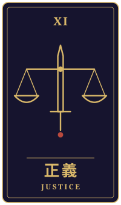
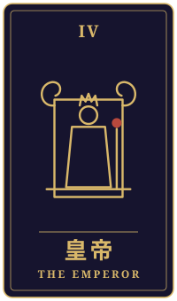

番屋
物語の手前に、ひとつの相談がありました。三枚のタロットをめぐるやりとりを、聞こえたままに書き留めています。
持ち込まれた相談
四十四になる息子が、離婚して家に戻りたいと言ってきました。海の見える古い家を民宿にしたいそうです。息子が十八の時、毎晩のように私とぶつかり、私は「この家に男は二人いらねえ」と言って追い出しました。妻はいまだにそのことを許していません。昨日、近くの水族館のアシカが、父親とのけんかを避けるために遠くへ移される途中で死んだと聞いて、眠れませんでした。あの時、本当は息子を守るためではなく、自分が楽になりたかっただけかもしれません。今度また二人で暮らして、またぶつかったら、出ていくのは年寄りの私の方でしょうか。迎えていいのか、断るべきなのか、わからないのです。
タロットの読み解き

過去
正義・逆位置
過去に出ているのは正義の逆位置です。正義は本来、物事を正しく量り、公平に裁くカードですね。逆位置は、その天秤が少し傾いてしまった状態を映すことがあります。あの夜、息子さんと自分のどちらに非があったのかを、今となって正確に量るのは難しいのかもしれません。それでも昨夜眠れずにいたのは、その傾きをご自身でも感じ取っているからではないでしょうか。

現在
皇帝・正位置
現在は皇帝の正位置です。責任を引き受け、家を支えていく力を示すカードですね。あなたがこの家の柱として生きてこられたことは、確かな力です。ただ、皇帝は統べる者であると同時に、自分の硬さにも目を向ける必要があるカードでもあります。今求められているのは、強く支えることより、まず一度手を緩めて、息子さんの言葉を正面から聞くことかもしれません。

未来
太陽・逆位置
未来には太陽の逆位置が出ました。太陽は明るさや開けた未来を示しますが、逆位置では喜びの時期が少し先へ延びたり、一時的な陰りが差したりする姿として現れることがあります。すぐに答えが出ない、というサインとも読めますね。急いで道を決めるより、時間をかけて話し合う余白を持ってみてはどうでしょう。
最後に
三枚を通して見ると、過去の傾いた天秤を、今の責任感で正そうとしている姿が浮かびます。ぶつかったときに出ていくのはどちらか、という問いに、カードは一つの答えを示してはいません。ただ、ご自身を責めるほど悩んでおられるのは、それだけ家族を大切に思っている証のようにも感じられます。迎えるか断るかは、息子さんや奥さまの思いも含めて、ゆっくり話し合ってお決めになってください。気持ちが重く続くときは、家族の問題に詳しい相談窓口や専門の方にも頼ってくださいね。
帰り際の問い楽観の裏で、見落としていることはないか。
読み解きは、タロット占い「月夜のアルカナ」が、この相談と引かれた三枚から返したものです。小説は同じ三枚を、別の角度から描いています。相談者は物語のための架空の人物です。相談文・読み解き・短編本文は、いずれも生成AIを使って制作しています。
物語に戻る